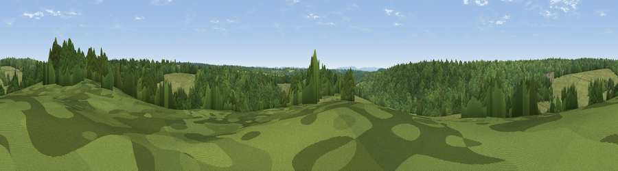

Viewpoint near Colgate
#45472 in England · top 95% of its area beats it · near ColgateWhere it is
The exact computed spot (TQ 22575 30975). Click the marker for map links.
The view, rendered

A 360° render of this exact spot computed from the terrain model, tree cover and land cover — summer colours, afternoon light, calibrated against photographs of famous viewpoints. Real trees, hedges and buildings will differ in detail.
The panorama
Grey silhouette: terrain skyline in each direction (720 bearings, Earth curvature and refraction included). Dashed green: skyline with trees (+15 m) and buildings (+8 m) as obstacles. Blue strip: how far the ground is visible on each bearing.
Where the view opens
Wedge length = distance to the farthest visible ground on that bearing (vegetation-aware). Rings at 10, 25 and 50 km.
What fills the view
64% woodland · 34% grassland · 1% cropland
Angular shares of the visible panorama (visual magnitude), not map area. Landscape diversity 0.32 (0–1 Shannon).
Key numbers
More beautiful places nearby
The staircase of upgrades: each row has a higher view potential than everything closer. Driving times are estimates from straight-line distance, calibrated against real road routing — check an actual route before setting out.
| Place | Direction | Drive | Score |
|---|---|---|---|
| Viewpoint near Lower Beeding | S · 2 km | ~6 min | 33.3 |
| Viewpoint near Nuthurst | SW · 5 km | ~10 min | 36.8 |
| Viewpoint near Handcross | ESE · 5 km | ~10 min | 39.2 |
| Hampshire Hill | SW · 5 km | ~11 min | 49.1 |
| Viewpoint near Kingsfold | NW · 7 km | ~14 min | 55.0 |
| Viewpoint near Capel | NNW · 13 km | ~23 min | 55.6 |
| Viewpoint near Coldharbour | NNW · 15 km | ~26 min | 71.3 |
| Wolstonbury Hill | SSE · 18 km | ~31 min | 79.6 |
51.06503, -0.25209 · source: screening · position refined by local search. Computed location — check access rights before visiting.